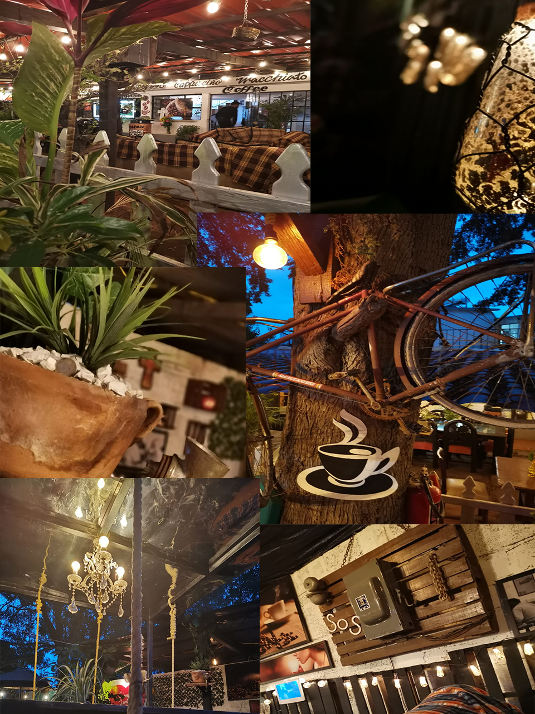

Quienes somos
Cafetería Santa Lucía abre sus puertas en Agosto de 2020, siendo este un proyecto familiar creado y pensado en otorgar un servicio de excelencia con alimentos y bebidas de calidad. En Santa Lucia apostamos a un nuevo concepto en contacto con la naturaleza y que te sientas como en casa. En cafetería Santa Lucía elegimos los mejores granos de café directamente del estado de Veracruz, el mejor café para los mejores clientes.